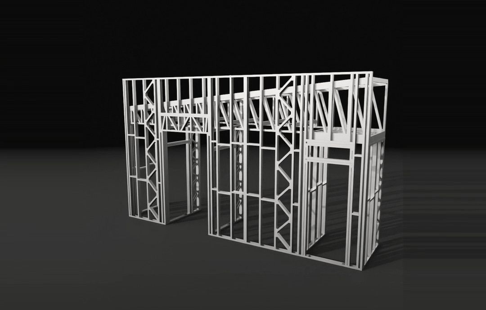
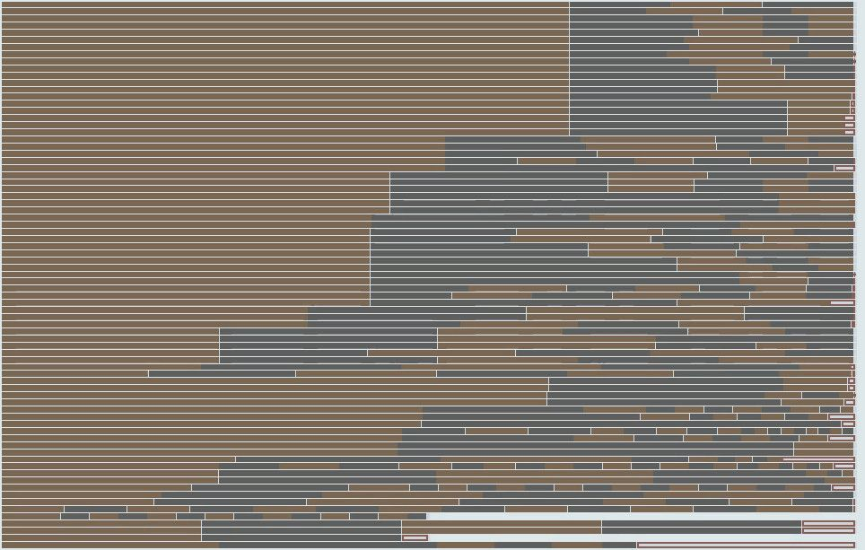
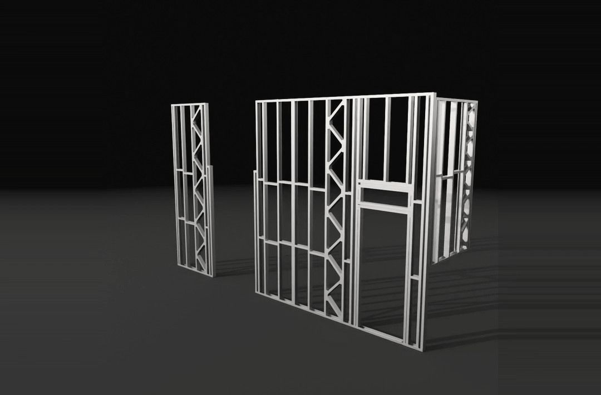
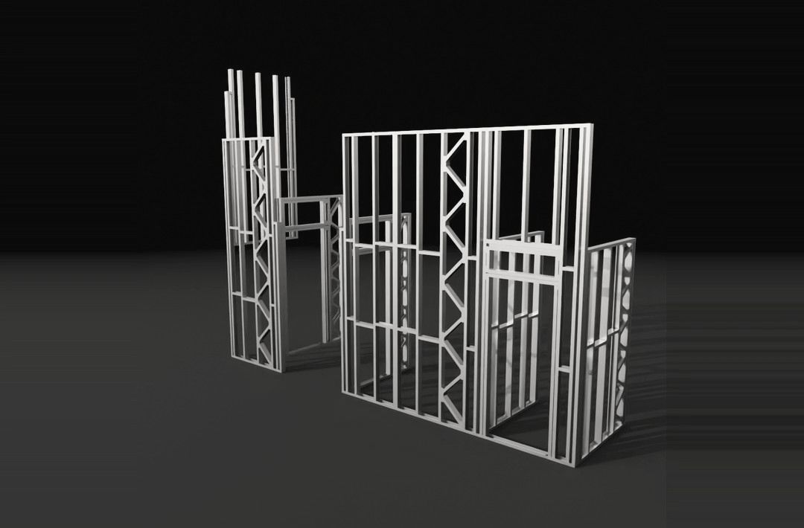
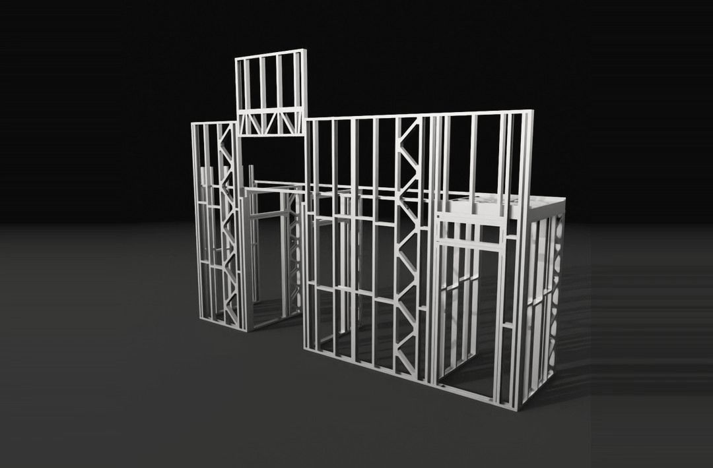
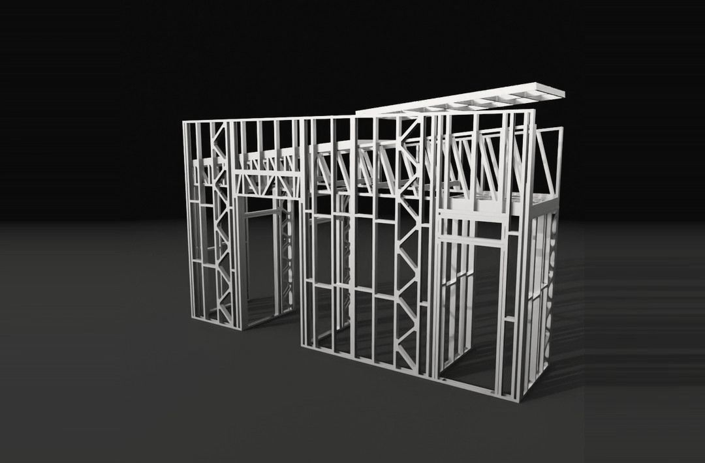

obras / estruturas
Do aço à estrutura

430 peças. Nenhuma medida decidida na obra.
Num steel frame, o aço é comprado e cortado pelo projeto. O plano de corte escolheu, barra a barra, entre a de 3 m e a de 6 m, contando 3 mm de serra por peça e 10 mm de ponta por barra.
Das 77 barras, 32 saíram sem sobra nenhuma. A perda foi de 9,5 kg em 651,3 kg comprados.
Na obra, cada painel tem a sua folha: 22 folhas no caderno de montagem. O nome no painel é o nome da folha.
- Local
- Belo Horizonte · MG
- Sistema
- Light steel frame
- Peças
- 430
- Aço na estrutura
- 600 kg
- Barras de corte
- 77, sendo 32 sem sobra
- Perda no corte
- 1,5%
- Caderno de montagem
- 22 folhas para 15 painéis e tesouras
- Escopo
- Projeto estrutural, plano de corte e caderno de montagem
- Etapa
- Projeto · 2026
Plano de corte


Montagem







